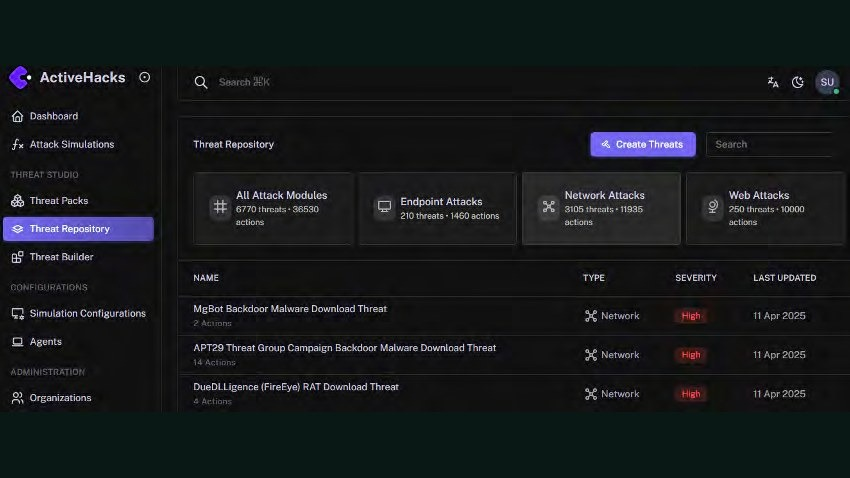
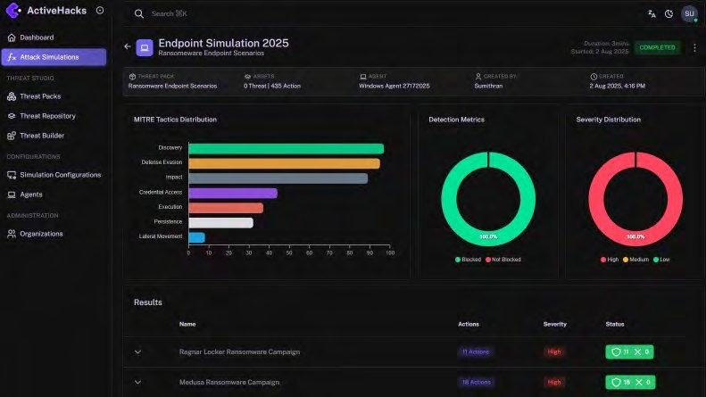
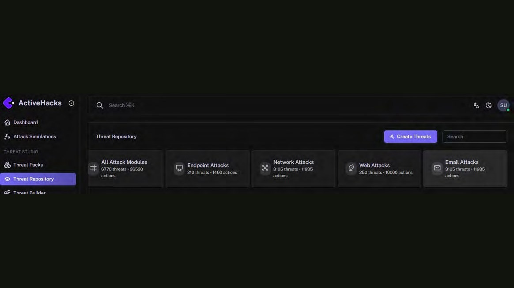
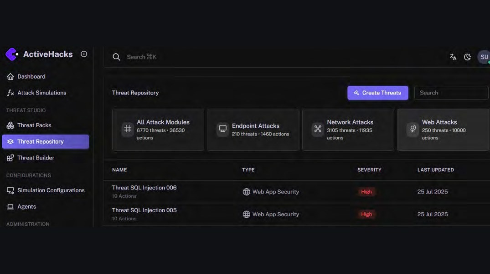
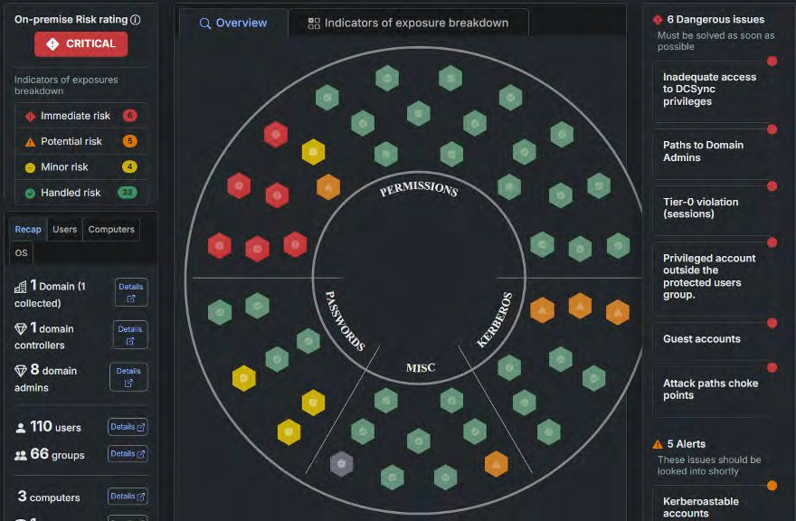
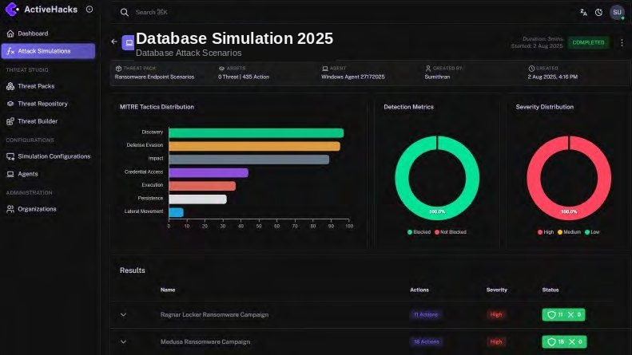

Test your defenses the way an attacker would.
ActiveHacks simulates real-world attacks to validate how effectively your systems detect, block, and respond — turning assumptions about your security stack into evidence, with clear remediation guidance for every gap found.
Know your control effectiveness before an adversary does.
ActiveHacks safely simulates real-world attacks to identify security gaps and validate existing controls, then delivers actionable remediation guidance to close them. Integration with SIEM, EDR, and NDR tools improves both visibility and response, while continuous monitoring catches misconfigurations and environmental drift as they happen. A rich threat simulation library — spanning malware, ransomware, and more — is mapped directly to the MITRE ATT&CK® framework, so results translate into risk-based, prioritized action.
Proactive threat validation
Automatically assesses control effectiveness against the latest adversarial tactics and techniques.
Security stack optimization
Identifies misconfigurations and tuning opportunities across EDR, SIEM, NDR, IAM, and database logs.
Continuous assessment
Scheduled and on-demand simulations catch environmental drift and emerging threats as they appear.
Attack framework alignment
Every simulation maps directly to MITRE ATT&CK and the OWASP Top 10.
Customizable attack scenarios
Build targeted simulations tailored to your environment and threat landscape.
Business impact visibility
Translates technical gaps into risk metrics tied to critical assets and operations.
Attack simulation across every layer.
A comprehensive suite of attack simulations across network, endpoint, email, web application, Active Directory, and database layers — helping teams identify vulnerabilities, validate defenses, and strengthen their overall security posture.
Network Infiltration Attack Simulation
Safely replicates sophisticated, real-world attack paths — validating detection controls, verifying network segmentation, and reinforcing internal defenses with fully customizable, MITRE-aligned threat scenarios.

01 — NetworkEndpoint Attack Simulation
Replays real-world endpoint attack techniques to validate whether your EDR and endpoint controls actually detect and stop them — not just whether they're installed and running.

02 — EndpointEmail Attack Simulation
Evaluates your email security stack by safely replaying real-world attack vectors — testing filters, detection engines, and blocking controls for malicious links and weaponized attachments, without any user involvement.

03 — EmailWeb Application Attack Simulation
Emulates real-world attacks against web applications — identifying critical OWASP vulnerabilities by replaying malicious payloads, validating detection controls, and testing response workflows to proactively harden your application security posture.

04 — Web AppActive Directory Attack Simulation
Advanced, non-intrusive assessment of your Active Directory environment — helping teams detect vulnerabilities, validate controls, and understand privilege escalation risk from multiple vantage points.
- Enumeration & discovery — domain trusts, admin users, group memberships, and GPOs.
- GPO abuse — tests whether unauthorized policy changes are detected.
- Domain persistence — Golden Ticket, SID History injection, DCShadow.
- Credential theft — DCSync, NTDS.dit extraction, cached credential harvesting.
- Kerberoasting & Pass-the-Hash — service ticket abuse and token-reuse detection.
- Privilege escalation — exploitation of insecure ACLs such as GenericAll and WriteDACL.

05 — Active DirectoryDatabase Attack Simulation
Targeted, non-intrusive assessment of your organization's critical databases — automatically surfacing misconfigurations, privilege escalation risks, and exploitable weaknesses that could lead to a severe breach.

06 — Database